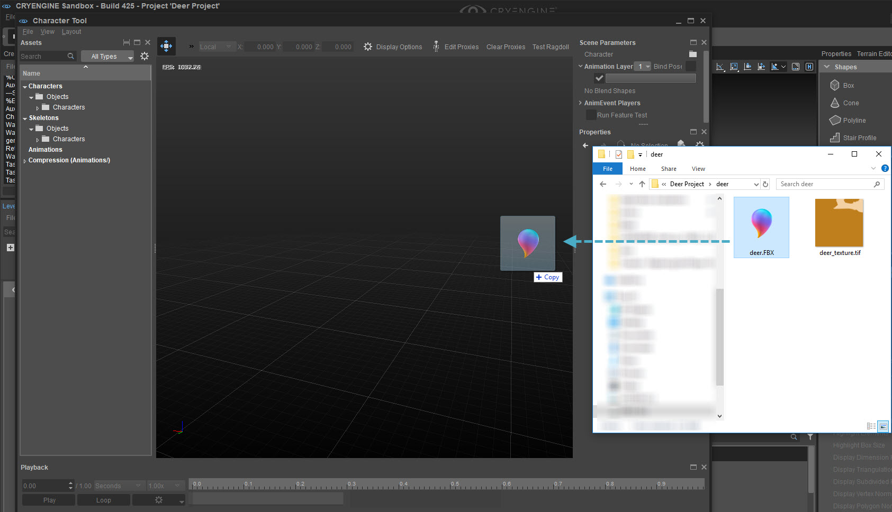
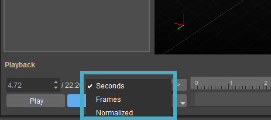
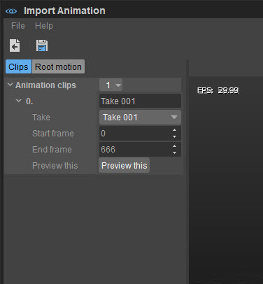
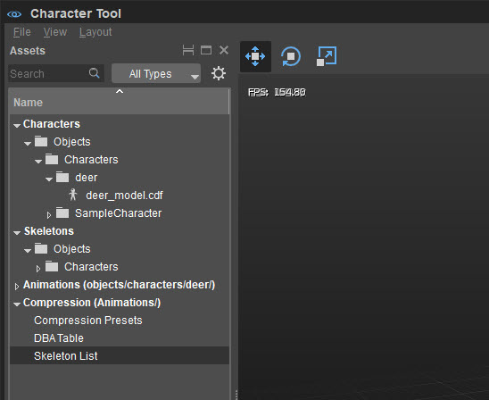
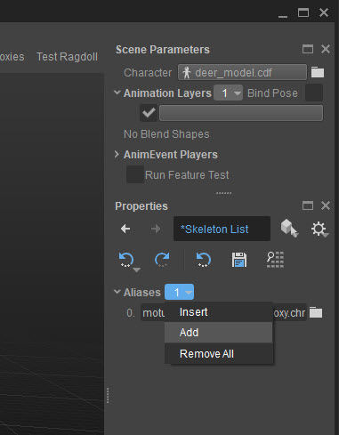
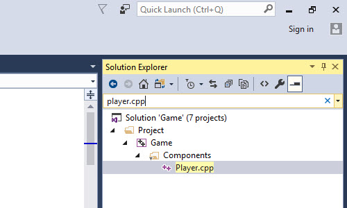
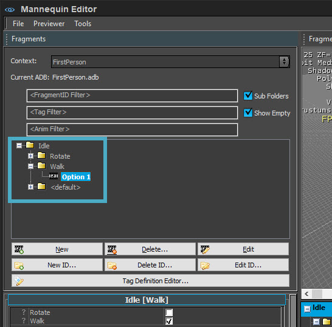
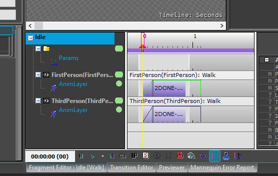
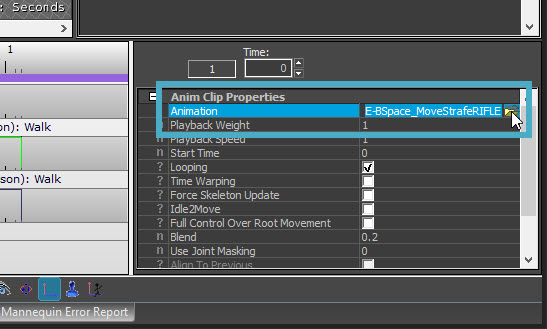

Overview
This tutorial aims to explain the process of replacing a player character from the Isometric Pathfinding Template C++ template project with another animated model.
Please be advised that GameSDK is NOT used for this tutorial. It is based on the templates that are provided with the Engine, so create a new project using the Isometric Pathfinding template.
If you prefer to watch a video tutorial rather than read a written one, check out the video tutorial at the bottom of this page.
This tutorial can be used as a base for other templates, but these don't work exactly the same as the Isometric Pathfinding template. Please be careful when attempting this.
Tools Used
- Character Tool
- Mannequin Editor
- Microsoft Visual Studio® (a free Community version is available)
- Any .xml editor, like Notepad++
Files
Download the following file and extract anywhere:
This is just an example asset. It is of course possible to use other .fbx characters.
Importing the Character Model
- Open the Character Tool and drag & drop the deer.fbx file into its viewport:

Save it under objects/characters/
Importing will create several different assets related to this character model, so it is recommended to create a new folder inside objects/characters, e.g. objects/characters/deer.
Importing and Assigning the Texture
The .zip file also contains a texture file, deer_texture.tif. To assign this to the deer model:
Drag the deer_texture.tif into the same folder in the Asset Browser.
- Double click the deer material and in the Material Editor that just opened, under Texture Maps, remove the Normal.
- Change the Diffuse to the deer_texture in the deer folder.
- File -> Save and close the Material Editor.
Importing and Adjusting Animations
When looking under Animations, it will become clear that the one animation that came with this model (i.e. Take 001) is actually made up of three different animations: an idle animation, a walking animation and a running animation.
First, it is important to know which frames represent which animation. To find this out, go to Character Tool -> Playback panel and change Seconds to Frames: 
Changing seconds to frames
Check when the animations start and which frame is the last of each animation. Write these frames down for later use.
The first frame is the default pose and therefore not part of an animation. Make sure to skip this frame and start the first animation on frame 1.
To separate the animations:
- Open the Animation importer by either:
In the Character Tool going to File -> Import FBX -> Animation or;
In the main Sandbox UI, going to Tools -> FBX Import -> Animation. - Drag & drop the deer.fbx file into the viewport of the Animation importer.
In the panel on the left, the one long animation has now appeared:
Initial animation clip
To separate this animation into an idle, walking and running animation, all that needs to be done is to create 3 animation clips. Adjust the animation clip that is already available to only contain the idle animation by setting the start and end frame numbers appropriately. Use the frames written down earlier, for example, the idle animation starting from frame 1 and ending on frame 616. Rename the animation clip from Take 001 to something relevant, like deer_idle.
OptionalClick Preview this to test the animation.
- Click the small dropdown button next to Animation clips and choose Add.
- Add the walking animation the same way.
- The run animation will not be used in this example, so just choose File -> Save and exit the Animation importer.
Adding the Skeleton
Since the skeleton list is not used in Engine release from 5.6 onwards, any references to skeletonlist.xml within this tutorial can be ignored.
This means that if you're using CRYENGINE 5.6 or later, your next step should be Changing the Third-Person Model to the Deer Model.
To add the skeleton of the deer, either the Character Tool can be used, or the skeletonlist.xml file can be edited.
In the Character Tool
- In the Assets pane on the left, expand Compression (Animations/).

Skeleton List location - Select Skeleton List.
- Go to Properties -> Aliases, click on the small dropdown button and choose Add.

Adding a skeleton - Use the browse button on the right of the newly created Alias to search for /Objects/Characters/<folder chosen above>/deer.chr. Click Open.
In Skeletonlist.xml
- In the Windows File Explorer, open <Project Folder>/Assets/Animations/skeletonlist.xml.
Copy and paste the line for the existing skeleton onto the following line and replace the name and path to match your deer skeleton, e.g.
<Skeleton name="deer" file="Objects/Characters/deer/deer.chr"/>.It is advised to name the skeleton the same as the name of the file that was imported earlier, in this case deer.
- Choose File -> Save and close the Character Tool.
Changing the Third-Person Model to the Deer Model
Now that the model and all its associated parts (skeleton, texture etc.) have been imported into the Sandbox, the template source code needs to be modified to load the new deer model instead.
- Close the Sandbox.
- Go to the root folder of the project, right click on game.cryproject and choose Generate solution.
- A new Solutions folder will appear. Open this folder and the following subfolder (win64 if you've generated a solution for 64-bit Windows) and open game.sln.
- In the Solution Explorer on the right, search for player.cpp and open it:

Looking for player.cpp Look for line 25, which contains m_pAnimationComponent->SetCharacterFile and replace the thirdperson.cdf with the deer.cdf, including its path. The line would then read something similar to:
m_pAnimationComponent->SetCharacterFile("Objects/Characters/deer/deer.cdf");The line number mentioned here may vary between Engine versions.
- Now compile the whole build by going to Build-> Build Solution.
- Close Visual Studio.
- Open Assets/Animations/Mannequin/Preview/Player.xml.
Change the model at the end of line 4 and 5 to your deer.cdf, including its path (like in step 5).
- Save and close.
Changing the Animations
The character still needs to be set up to use the new animations that were imported earlier, because the animations from the third-person template (Motus character) are incompatible with the new deer skeleton.
- Open Sandbox again and open the Mannequin Editor (Tools -> Animation -> Mannequin Editor).
- Go to File -> Load Preview Setup and choose player.xml.
- Click the Fragments tab in the bottom left corner.
In the Fragments tree in the top left, expand the Idle -> Walk animation and double-click Option 1:

Finding the Walk animation- Now, in the bottom of the Fragment Editor on the right, click the bar under ThirdPerson(Thirdperson): Walk:

Walk animation in Fragment Editor To the right in the Anim Clip Properties, click the field next to Animation and change this to the deer_walk animation:

Changing animation clipOptionalThe FirstPerson animation is not necessary, because this is an isometric game example, so if desired, the FirstPerson(FirstPerson): Walk animation that was not changed, can be deleted. It will not impact the game if this is not deleted.- Do the same for Idle -> Default -> Option 1, but change this to the deer_idle animation.
- Choose File -> Save Changes and close the Mannequin Editor.
Testing the Character
Now press Ctrl + G to test the deer in the template level. Clicking anywhere in the level or on the ramp should make the deer walk there.
It is advised to name the skeleton the same as the name of the file we imported, in this case deer.
Example Level
An example level can be found in the Asset Database that combines the results from this tutorial and the next one. You can find it on the Asset Database.
Video Tutorial
Topic index:
- 00:40 Understanding Where the Default Player Is Defined
- 01:17 Related tutorials to set up for this tutorial
- 01:38 FBX vs Plug-In Workflow
- 02:22 Creating the Project From a Template
- 02:44 Setting Up the New Character Folder
- 03:10 Importing and Setting Up an .FBX Animated Character
- 03:28 Importing the FBX Into the Character Tool
- 04:24 Examining Your Imported Character
- 04:53 Display Options in the Character Tool
- 05:39 Creating a Physics Proxy
- 06:11 Editing the player.xml File
- 07:02 Editing SkeletonList.xml
- 07:40 Separating the animations
- 10:11 Changing the Default Character in C++
- 10:42 Generating a C++ Solution
- 11:26 Configuring Build Method in Visual Studio
- 11:50 Modifying the Player Character in Player.cpp
- 12:12 Building and Testing Your Project From C++
- 13:03 Assigning Animations in the Mannequin Editor
- 13:35 Finding Help With Mannequin in the Documentation
- 14:18 Using Mannequin to Assign Animations